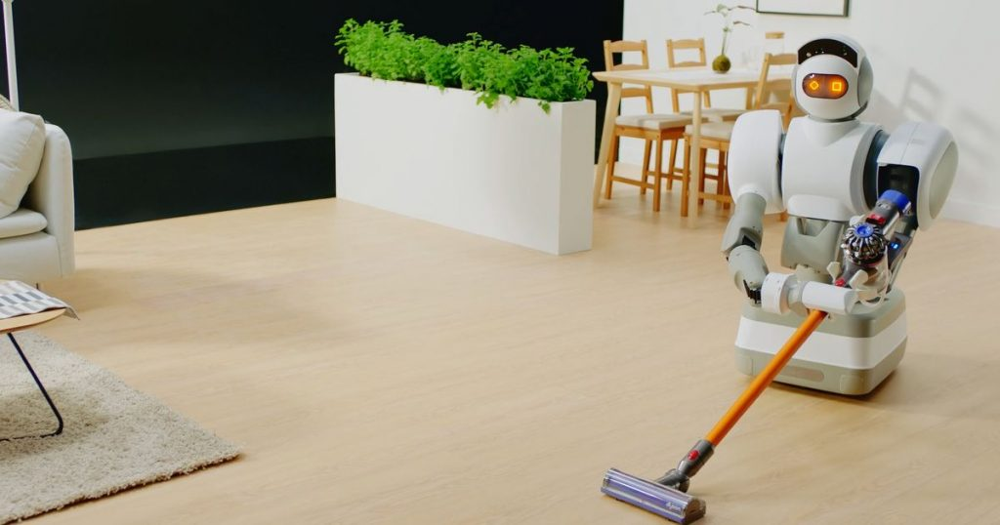
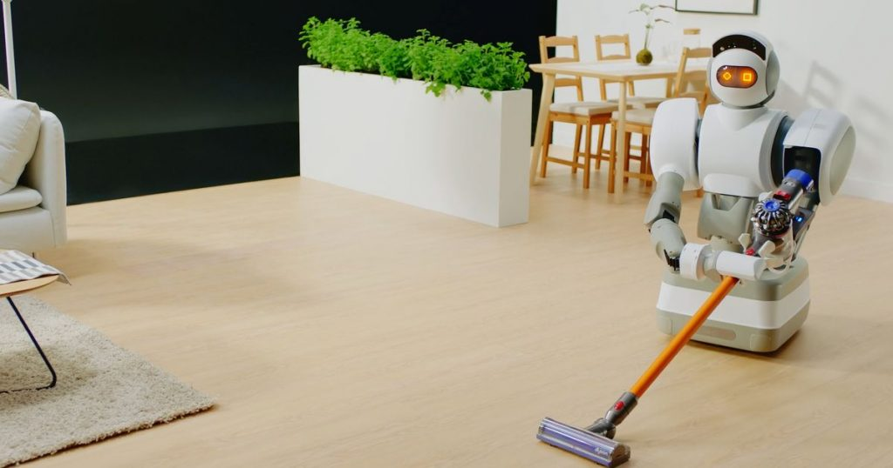

Uso de robôs em casa?
O mundo robótico não cabe somente a área da saúde, o uso
robôs em casa já foi representado até em jogos como "Fallout 4"
a evolução do mundo da tecnológico é muito constante e vem apresentando
sempre novas formas de inovar. Uma dessas inovações é o uso em casa
que vem trazendo facilidades como: auxiliar nos cuidados da saúde,
fazer companhia à pessoas solitárias, reduzir distâncias
ajudar crianças pequenas e muitas outras formas eles
podem ser úteis.
A verdade é que nós precisamos deles mais
do que nunca, hoje 100% das nossas tarefas são feitas
por nós, com pequenas ajudas de máquinas como de lavar roupa,
secadora e etc. Os robôs assistentes
poderiam preparar comidas, lanches, lavar a louça, e eu sei
que tudo isso poderia parecer uma loucura, mas esse
futuro está próximo de acontecer, e essas tarefas
citadas acima, não se comparam do que eles realmente
seriam capazes de fazer, vai além da imaginação humana
a capacidade em que um robô pode chegar.
Logo abaixo você podera ver os países que adotam a robótica
em grande quantias, não só na área residencial, mas como diversos
setores que eles já estão dominando.
Países com Robôs
| Países | Quantidade |
|---|---|
| Coreia do Sul | 631 |
| Cingapura | 488 |
| Alemanha | 309 |
| Japão | 303 |
| Dinamarca | 211 |
| Estados Unidos | 189 |